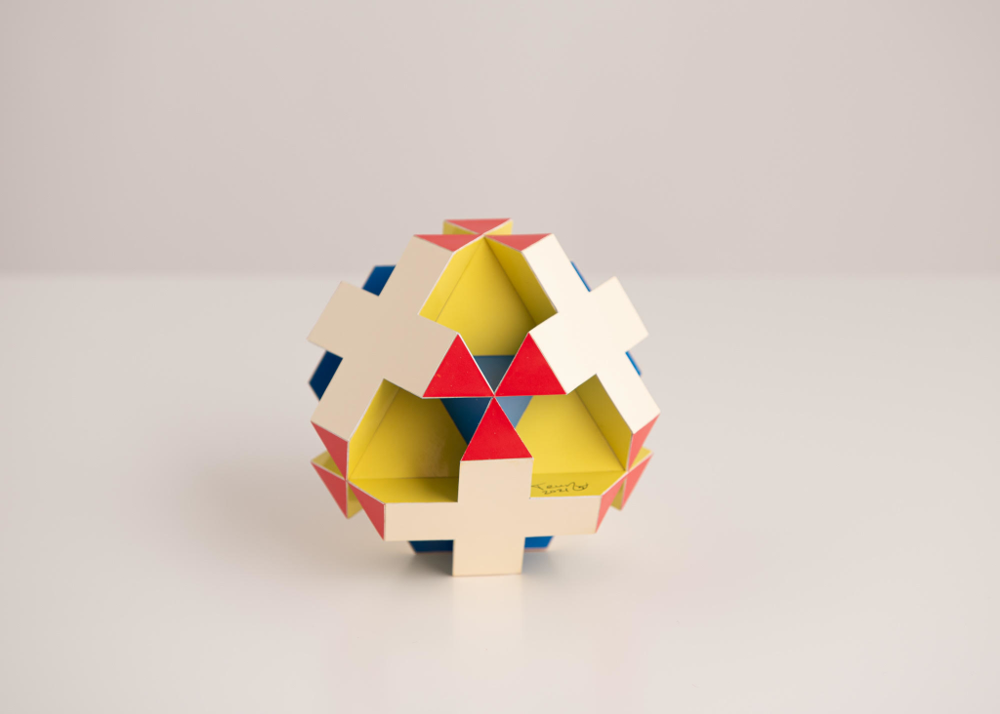
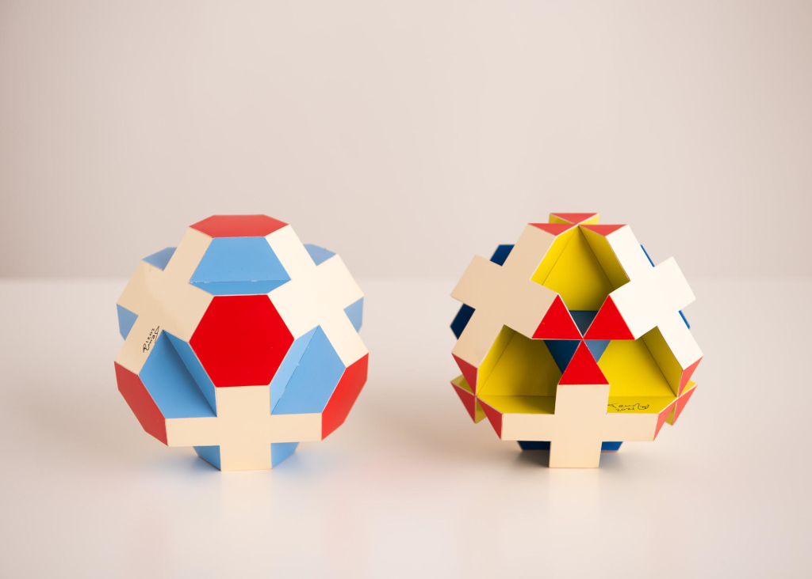

Faceted Inflated Swissohedron

This is the inflated Swissohedron with some parts cut away. The base of this polyhedron is a Stella Octangula.
The model was built in 2021 and the edge length is 2.5 cm (1 inch) and the diameter of the model is 13 cm (~5.1 inch). When you look into a 3-fold axis of this model you see something that reminds me of the warning symbol for nuclear waste. This is why I like to refer to this model as the toxihedron (i.e. 'tox' doesn't refer to edge at all in this case)
The picture below shows the non-faceted and the faceted models next to each other.

Copyright of pictures by PhotoArt Studio Hörby
Links
Last Updated
2021-07-11
Interactive 3D model